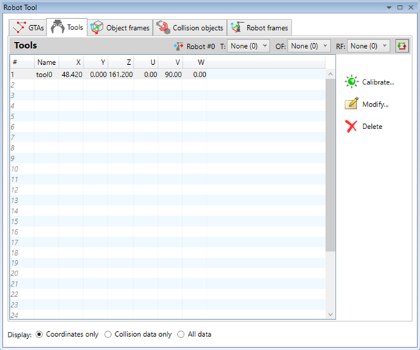
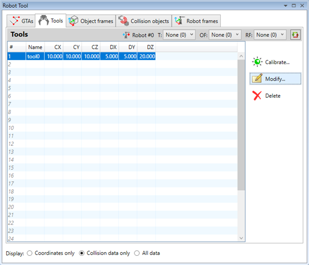
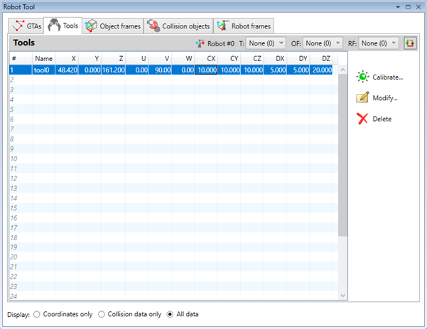
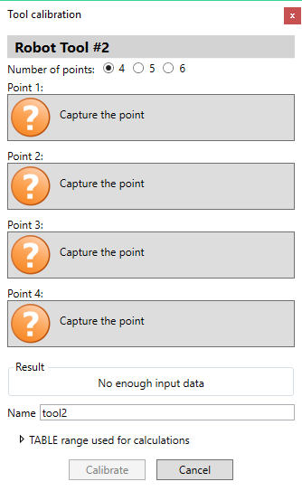
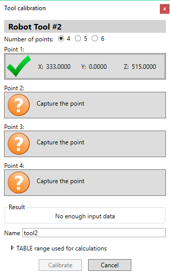
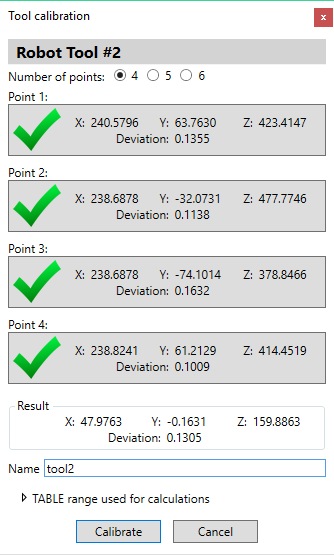
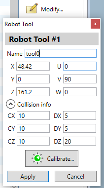

The tool offset is a transformation between the mount on the last joint of the robot and the tip of the tool. Similar to the target points it is presented as a set of 6 values:
- X, Y, Z – for the coordinates of the offset in millimetres
- U, V, W – for the angular orientation of the tip in degrees.
Since firmware version 2.0290 collision detection functionality has been added. For tools additional set of 6 parameters defines so called Oriented Bounding Box (OBB) around the tool:
- CX, CY, CZ – the coordinates of the centre of the OBB
- DX, DY, DZ – distances from the centre to each side of the OBB
An array of 31 tool definitions is available for use to all programs. Unique name can be assigned to each tool to be used to identify and reference it in programs.
The robot tool displays a list of already defined tools. It can display tool info in 3 modes:
- offset and orientation only

- collision data only

- both offset and orientation and collision data

The tool offset can be calculated by performing a calibration procedure. It is possible to select 4 to 6 points to be captured.

During the calibration procedure the robot has to be moved to different positions and orientations trying to keep the tip of the tool as close as possible to a pre-selected point in 3D space. Usually a calibration object is fixed in a stable position relative the robot so that it can be used as a reference point.
The points are captured using the Robot Jog Tool user interface.
The operator should tune the robot position and orientation until the tip goes as close as possible to the reference object.
By pressing the ‘Capture’ button the point is accepted and stored in the calibration wizard and robot jog tool is closed.
The corresponding button changes its state and displays the coordinates of the captured point with respect to the tool mount at the last joint of the arm.

Then the operator can continue by capturing the next point.
Once enough points are captured the calibration algorithm will attempt to calculate the tool offset based on the input points that are collected.

The outcome of the calculation will be displayed in the ‘Result’ section as X, Y, Z coordinates as well as a standard deviation which is a measure of how well the captured points are grouped after applying the calculated tool offset to them.
For each captured point an individual deviation value is displayed as well. It can be used as an indication for the quality of the point and the operator can decide to recapture some of the points in order to improve the calibration.
By pressing the ‘Calibrate’ button the tool offset data will be stored to the controller.
The operator can select the name of the tool as well which should be unique as it is used to reference the tool in programs.
The algorithm for calculation of the calibration uses TABLE range on the controller to store the captured points and to receive the result. It is possible to adjust the used range:
By pressing
 button the operator can directly
type-in a new tool offset or to modify the coordinates or the name of
previously defined entry. That is particularly useful when the orientation of
the tool coordinate system is different than the one of the last joint of the
robot and needs to be adjusted.
button the operator can directly
type-in a new tool offset or to modify the coordinates or the name of
previously defined entry. That is particularly useful when the orientation of
the tool coordinate system is different than the one of the last joint of the
robot and needs to be adjusted.

By pressing the ‘Calibrate…’ button it is possible to launch the calibration wizard.
By pressing the ‘Apply’ button the changes are stored to the controller.
By pressing
 button the data stored in
selected tool definition entries will be deleted and they will become empty.
button the data stored in
selected tool definition entries will be deleted and they will become empty.